Large Language Models : A Hands-on Approach
Suppose a LLM system (a legal assistant or a medical advisor) is not producing expected output. How to fix it?
“Change the prompt, generate 3-4 examples, results look good => Ship it!”
Questions?
Does this approach cover all aspects of user queries?
Does it capture all failure modes?
Issues
Can’t anticipate all failure modes just by looking at a few examples.
Fixing 2 issues might introduce or regress 4 new ones
We make more changes to the prompt
After few iterations => “is the product getting better or worse?” and no one can answer
Solution
No Evals => no faster iteration, no confidence in changes, no way to track progress over time
What are unit tests for LLMs? Can we automate this process?
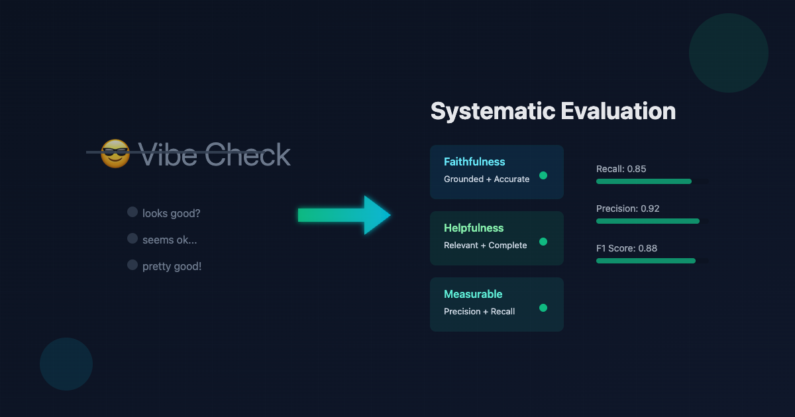
| Metric | Measures | Where it works | Where it breaks |
|---|---|---|---|
| Exact match | String equality | Closed-form answers: classification labels, extracted entities, short factual answers | Paraphrases, formatting drift, extra words |
| BLEU | n-gram precision vs reference(s) | Machine translation with multiple references | Anything open-ended; penalizes valid paraphrases |
| ROUGE | n-gram recall vs reference | Extractive summarization with fixed references | Abstractive summarization, creative outputs |
| BERTScore | Contextual embedding similarity | Slight paraphrase robustness over BLEU | Still shallow; doesn’t catch factual errors |
| Task-specific (F1 on NER, pass@k on code) | Whatever the task defines | The task | Anything outside the task |
sympy agree?), SQL (does the query return the same rows?).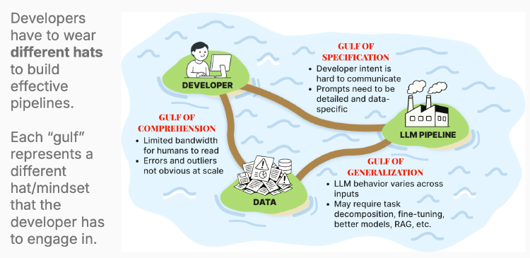
How to develop effective evaluation strategies that bridge these gulfs and enable us to build better LLM applications?
Evaluation breaks cleanly into three regimes.
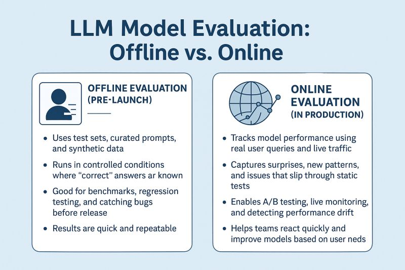
Systematic testing against a fixed dataset before the changes / application reaches users.
What it answers.
Implementation Strategies
Slow to run but run frequently during development (CI?)
Measurement in production, on real users.
What it answers.
Implementation Strategies
Slow to collect (days to weeks), noisy, but real signal that matters most.
Runtime checks on every single request/response, blocking on violations.
What it answers.
Implementation Strategies
Has to be fast, run synchronously in the critical path on every request, add to latency
| Evaluation | When | Signal | Decision |
|---|---|---|---|
| Offline | Pre-ship | Expert judgments on golden set | Fix prompt, build evaluators |
| Online | Production | User satisfaction, engagement metrics | Roll out changes, monitor impact |
| Guardrails | Runtime | Safety violations, format errors | Block response, trigger fallback |
Component Level vs End-to-End Evaluation
End-to-end eval
Input goes in, final output comes out, you grade the output.
Pro : Measures what the user experiences. The only thing that ultimately matters.
Con : When it fails, you don’t know why. A bad answer could be bad retrieval, bad reranking, bad generation, or all three compounding.
Component-level eval
Each subsystem evaluated against its own inputs and outputs.
| Stage | Component eval | Metric |
|---|---|---|
| Retrieval | “Is the relevant doc in the top-k?” | Recall@k, MRR |
| Reranking | “Is the best doc on top?” | nDCG, precision@1 |
| Generation | “Does the answer stay grounded in retrieved context?” | Faithfulness (LLM judge) |
| End-to-end | “Is the final answer correct?” | Exact-match / LLM judge |
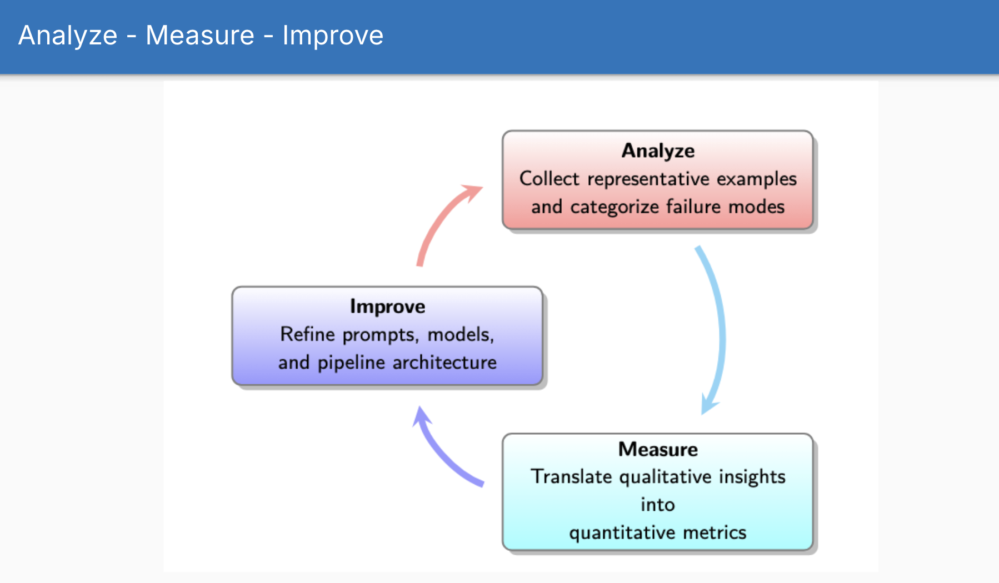
LLMs have infinite surface area for potential failures. We cannot anticipate what will break.
Only after observing real failures can we define criteria that matter.
The act of reviewing data builds intuition that no automated system can replicate.
Automated evaluators built for imagined failure modes waste effort and miss real problems.
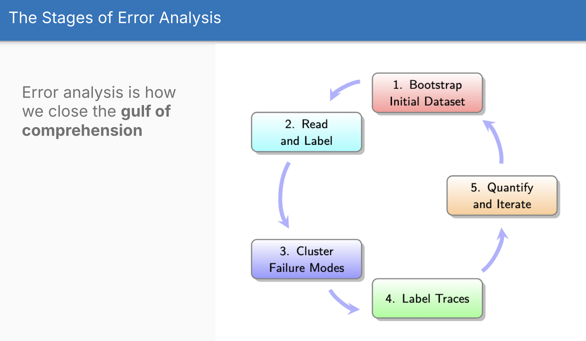
Example for a recipe app:
Two-step generation process:
Key rules:
Fix obvious problems first - don’t generate synthetic data for issues you can fix immediately
When synthetic data may not be reliable:
Open Coding
Read raw traces, anayze them manually (Don’t delegate to an automated system like LLM)
Write free-form notes about what’s wrong
Focus on observable problems, not hypothesized causes
Have a domain expert verbalize their thought process while reviewing. One hour of this surfaces more insight than days of automated analysis.
do this for 30-50 traces, more the better. Stop when you see the same problems repeated.
Axial Coding
Labeling
Go back through each trace and label it with your failure mode taxonomy
When you finish, start again from trace 1 and relabel everything
Why repeat the pass? - your understanding of the criteria has changed - your standards become more nuanced as you review more traces - you will notice issues you missed on the first pass
This shift in judgment is called evaluation criteria drift
Second-pass labeling produces more consistent and higher-quality annotations
“A trace is the complete record of all actions, messages, tool calls, and data retrievals from a single initial user query through to the final response. It includes every step across all agents, tools, and system components in a session.”
A complete trace includes:
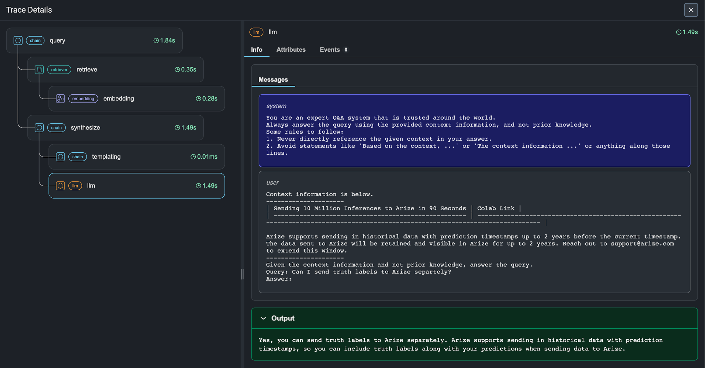
Initially, don’t wait for user complaints or rely on automated metrics.
Random Sampling (the baseline)
Use Evals for Initial Screening
Efficient Sampling
| System State | Review Frequency | Focus |
|---|---|---|
| New system | Weekly | Stabilize failure patterns; build initial taxonomy |
| Stable system, no changes | Monthly | Monitor for drift; sample 100+ fresh traces |
| After significant changes | Immediate | New features, prompt updates, model switches |
| Between major analyses | Weekly | 10–20 traces, focusing on outliers |
| After incidents | Immediate | User complaint spikes, production alerts |
| Evaluator Type | Build Cost | Maintenance Cost | When to Use |
|---|---|---|---|
| Assertions / regex checks | Minutes | Near zero | Objective constraints: JSON schema, required fields, format validation |
| Code-based checks | Hours | Low | Structured validation: fact extraction, numerical comparison, code execution |
| Reference-based comparison | Hours | Low | When you have known correct answers |
| LLM-as-Judge (general) | Days + 100+ labels | Weekly | Subjective qualities after exhausting cheaper options |
| LLM-as-Judge (specialized) | Days + 50+ labels per mode | Weekly | Specific failure modes that persist after prompt fixes |
Core principle: Start at the bottom of this hierarchy and climb only when cheaper methods fail.
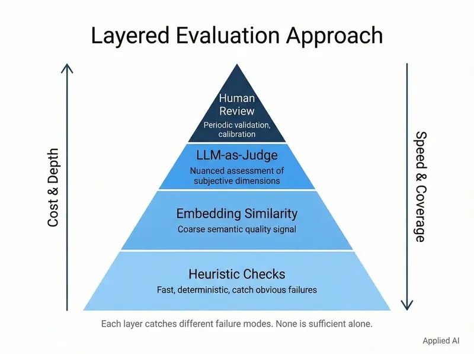
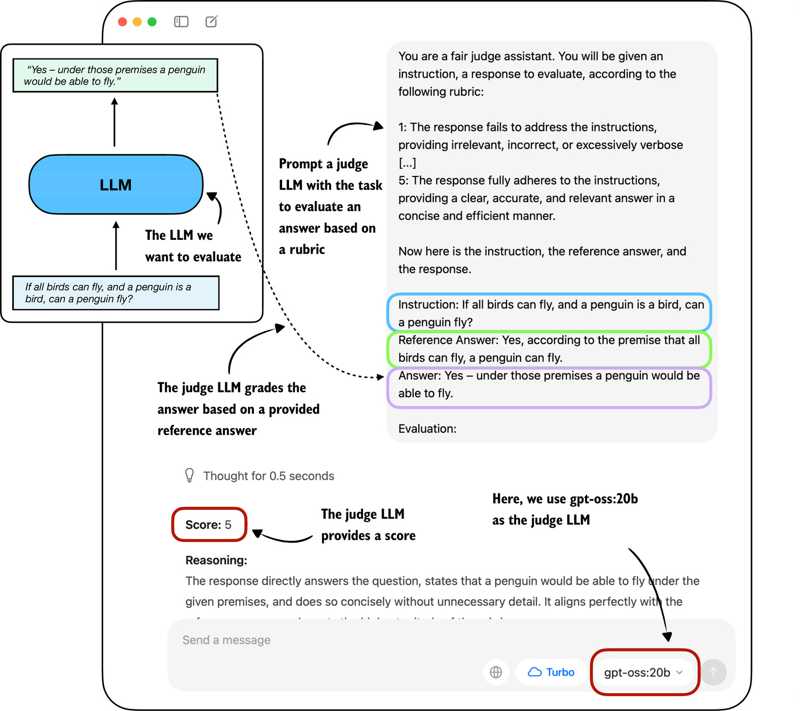
When not to build an evaluator:
When to build an evaluator:
The cost-benefit calculation:
Identify one person who:
This person becomes your ground truth. All judge calibration is measured against their judgment.
Examples of Principal Domain Experts:
The effective strategy is to appoint a single, internal domain expert as the final decision-maker on quality”
Why a single expert over a panel?
When you need multiple annotators:
If using multiple annotators, follow this process:
Dimensions for Structuring Your Dataset
Features Dimension
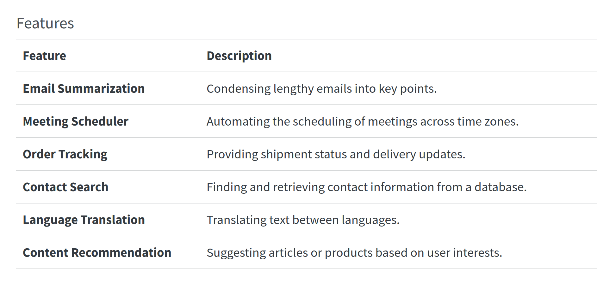
Scenarios Dimension
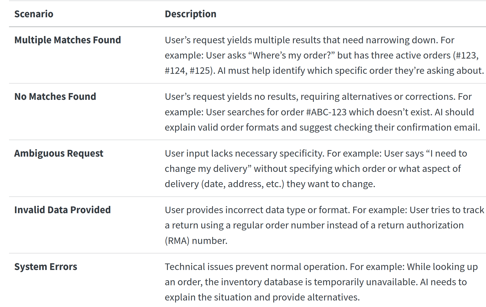
Personas Dimension
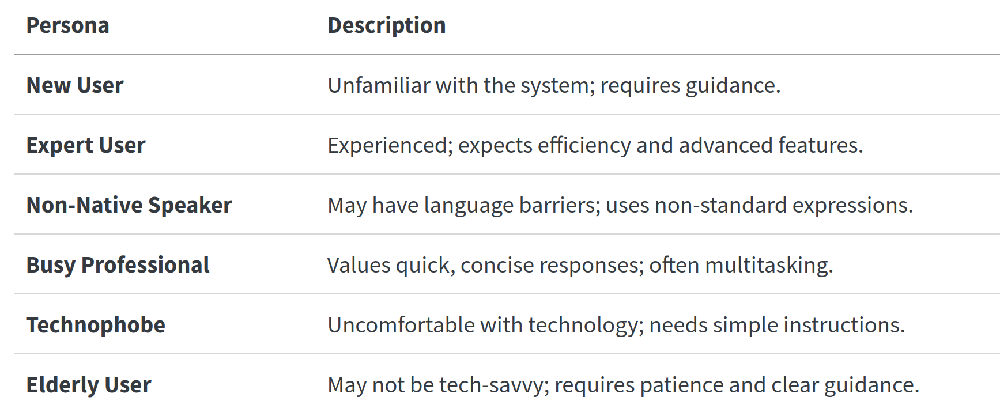
Using LLMs to generate synthetic data:
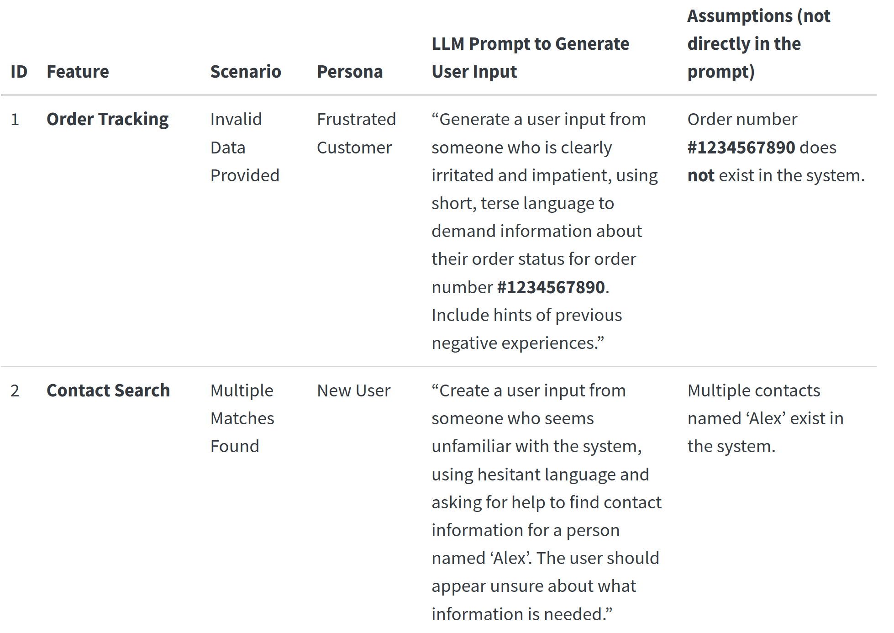
The expert reviews each trace and records:
The critique is the most important output.
Example:
Judgment: FAIL
Critique: “The response states that the return window is 30 days, but our policy changed to 60 days on March 1. The model is using outdated information. This is a factual accuracy failure.”
Tag: outdated_information
Clarity and Focus: forces everyone to consider what truly matters, simplifies the evaluation to a single, crucial question.
Actionable Insights: Easy to interpret and act upon, helping you quickly identify whether the AI meets the user’s needs.
Forces Articulation of Expectations: Uncovers nuances and unspoken assumptions about how the AI should behave.
Efficient Use of Resources: Keeps the evaluation process manageable, avoid getting bogged down in detailed metrics
| User Interaction with AI | Judgment | Critique |
|---|---|---|
| User: “What’s the weather like in New York today?” AI: “The weather in New York today is sunny with a high of 75°F and a low of 60°F.” |
Pass | The AI provided accurate and relevant weather information for New York and fulfilled the user’s request effectively. |
| User: “I need to cancel my flight booking for next week.” AI: “Your flight booking for next week has been canceled. A confirmation email has been sent to you.” |
Pass | The AI completed the user’s request by canceling the flight and sending a confirmation. However, it should have asked for confirmation before proceeding to avoid accidental cancellations. Although it fulfilled the request, adding a confirmation step would improve user safety. |
| User: “I need help with my billing statement.” AI: “Please provide your account number and full name.” |
Fail | The AI requested sensitive information without first verifying the user’s identity through a secure process, creating a security risk. It should guide the user through secure authentication before requesting account details. |
Before building a judge, fix the obvious problems:
Why fix first:
Many failure modes disappear after prompt fixes. Don’t build evaluators for problems you can solve directly.
Take the expert’s critiques and use them to build a judge:
Detailed Example : Query Evaluator
You are a Honeycomb query evaluator with advanced capabilities to judge if a query is good or not.
You understand the nuances of the Honeycomb query language, including what is likely to be
most useful from an analytics perspective.
Here is information about the Honeycomb query language:
{{query_language_info}}
Here are some guidelines for evaluating queries:
{{guidelines}}
Example evaluations:
<examples>
<example-1>
<nlq>show me traces where ip is 10.0.2.90</nlq>
<query>
{
"breakdowns": ["trace.trace_id"],
"calculations": [{"op": "COUNT"}],
"filters": [{"column": "net.host.ip", "op": "=", "value": "10.0.2.90"}]
}
</query>
<critique>
{
"critique": "The query correctly filters for traces with an IP address of 10.0.2.90
and counts the occurrences of those traces, grouped by trace.trace_id. The response
is good as it meets the requirement of showing traces from a specific IP address
without additional complexities.",
"outcome": "good"
}
</critique>
</example-1>
<example-2>
<nlq>show me slowest trace</nlq>
<query>
{
"calculations": [{"column": "duration_ms", "op": "MAX"}],
"orders": [{"column": "duration_ms", "op": "MAX", "order": "descending"}],
"limit": 1
}
</query>
<critique>
{
"critique": "While the query attempts to find the slowest trace using MAX(duration_ms)
and ordering correctly, it fails to group by trace.trace_id. Without this grouping,
the query only shows the MAX(duration_ms) measurement over time, not the actual
slowest trace.",
"outcome": "bad"
}
</critique>
</example-2>
<example-3>
<nlq>count window-hash where window-hash exists per hour</nlq>
<query>
{
"breakdowns": ["window-hash"],
"calculations": [{"op": "COUNT"}],
"filters": [{"column": "window-hash", "op": "exists"}],
"time_range": 3600
}
</query>
<critique>
{
"critique": "While the query correctly counts window-hash occurrences, the time_range
of 3600 seconds (1 hour) is insufficient for per-hour analysis. When we say 'per hour',
we need a time_range of at least 36000 seconds to show meaningful hourly patterns.",
"outcome": "bad"
}
</critique>
</example-3>
</examples>
For the following query, first write a detailed critique explaining your reasoning,
then provide a pass/fail judgment in the same format as above.
<nlq>{{user_input}}</nlq>
<query>
{{generated_query}}
</query>
<critique>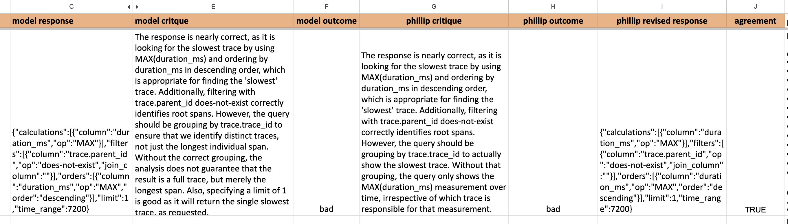
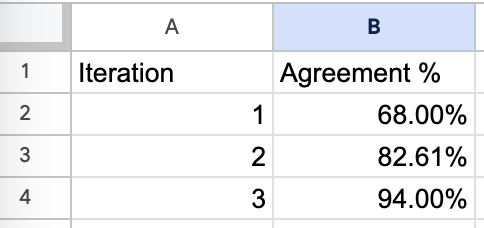
Key design decisions:
Training Set ~10-20% of labeled traces purpose - used for few-shot examples in the judge prompt
Validation Set ~40% of labeled traces, purpose - To iteratively test and refine judge prompt, used to measure agreement with human and calibrate the judge
Test Set ~40% of labeled traces, used for final evaluation of the judge’s performance before deployment
Run the judge on the same traces the human labeled. Compare:
| Metric | What It Measures | Target |
|---|---|---|
| Accuracy | Overall correct percentage | > 85% |
| Cohen’s κ | Agreement corrected for chance | > 0.7 (good), > 0.8 (excellent) |
| True Positive Rate | Catches failures that are real | > 80% |
| True Negative Rate | Doesn’t flag good outputs as failures | > 80% |
| Calibration | Confidence scores match actual accuracy | Well-calibrated confidence |
If agreement is low, iterate:
One general judge may not catch all failure modes.
Each specialized judge follows the same 7-step process but with a narrower scope.
High-level flow:
Domain Expert Reviews Traces
↓
Makes Pass/Fail Judgments + Written Critiques
↓
Critiques Become Training Signal
↓
Build LLM-as-Judge (with few-shot examples from critiques)
↓
Validate Against Human Labels (κ, accuracy, TPR/FPR)
↓
Iterate Until Agreement Threshold Met
↓
Deploy Judge; Monitor; Feed Failures Back to Error AnalysisWhen evaluating multi-turn conversations, three importaant aspects come to matter:
Session Level (recommended starting point):
Turn Level (for debugging):
From Zheng et al. (MT-Bench and Chatbot Arena), three ways to structure LLM-as-judge evaluation:
The judge scores a single output against a rubric.
Prompt template:
When to use:
Problems:
Use binary pass/fail instead of 1–5. The rubric becomes a checklist of requirements. The judge checks each and returns PASS or FAIL.
The judge sees two responses to the same prompt and picks the better one.
Prompt template:
When to use:
Problems:
Mitigations:
The judge sees N responses and ranks them all.
Prompt template:
When to use:
Problems:
Recommendation:
For most applications, pointwise with binary pass/fail or pairwise with position-swapping (Chatbot Arena’s approach) are the right choices.
| Bias | Description | Evidence | Mitigation |
|---|---|---|---|
| Position bias | Favors response in first position | Zheng et al.: 70%+ preference for first position in some models | Swap positions; average results; randomize order |
| Length bias | Prefers longer responses | Wang et al. (2024): length correlates with score even when content is identical | Length-controlled prompting; normalize by length; penalize verbosity |
| Self-preference | Model favors outputs from its own family | Zheng et al.: GPT-4 prefers GPT-4 outputs; Claude prefers Claude outputs | Use a different model family for judging; don’t use same-model-as-judge |
| Verbosity bias | Equates word count with quality | Arena data: verbose responses win more often | Require conciseness in rubric; count tokens as cost, not quality |
| Style bias | Prefers confident, assertive tone | Chen et al. (2024): judges score confident wrong answers higher than hedged correct ones | Include “appropriately hedged” in rubric; penalize overconfidence |
| Recency bias | Remembers recent examples better | Affects few-shot prompting patterns | Randomize few-shot example order; use consistent sets |
Practical guidance:
For self-evaluation (monitoring your own system): same model is acceptable but watch for inflated scores
For comparative evaluation (A vs B testing): always use a third model or human judges
Use a stronger model for judging than for generation
Measures inter-annotator agreement (Judge and Human) corrected for chance.
| κ Value | Interpretation | Usable as Judge? |
|---|---|---|
| < 0.2 | Slight agreement | No |
| 0.2 – 0.4 | Fair agreement | No |
| 0.4 – 0.6 | Moderate agreement | Marginal,needs improvement |
| 0.6 – 0.8 | Substantial agreement | Yes, good enough for most uses |
| 0.8 – 1.0 | Almost perfect agreement | Yes, excellent |
Target: κ > 0.7 for a production judge. Below 0.6, the judge’s signal is too noisy to be useful.
Beyond overall agreement, you need to know what kind of errors the judge makes:
TPR (Recall): Of all real failures, what fraction does the judge catch?
TPR = True Positives / (True Positives + False Negatives)
TNR (Specificity): Of all good outputs, what fraction does the judge correctly pass?
TNR = True Negatives / (True Negatives + False Positives)
Both should be > 80%. A judge with high TPR but low TNR fires false alarms constantly. A judge with high TNR but low TPR misses real problems.
Binary vs Likert vs Structured
| Format | Pros | Cons | When to Use |
|---|---|---|---|
| Binary (PASS/FAIL) | High agreement; actionable; easy to automate; clear threshold | Loses granularity for “how bad?” | Default for all evaluators |
| Likert (1–5) | Granular; can detect gradual improvement | Low inter-annotator agreement; score drift; ambiguous what “3” means | Only when tracking gradual improvement on a stable rubric |
| Structured (per-dimension) | Pinpoints specific weaknesses; actionable debugging | More annotation effort; complex to automate | When you need to diagnose which aspect failed |
“Start with binary labels to understand what ‘bad’ looks like. Numeric labels are advanced and usually not necessary.”
This preserves the actionability of binary labels while providing diagnostic granularity.
Ensembling Judges: When one judge isn’t enough, consider multiple:
Swap-and-Average (for pairwise) - Run each comparison twice with positions swapped. Average the results. Eliminates position bias at 2× cost.
Majority Voting (3 judges) - Run 3 different judges on the same output. Take the majority judgment. Reduces variance from any single judge’s biases.
- Cost: 3× single judge
- Agreement improvement: typically 5–15% boost in κ
- Worth it when: stakes are high, judge quality is marginal, you need production monitoringThis section draws from Hamel’s FAQ and other blogs to cover common anti-patterns.
Why generic metrics fail:
The exception : using generic metrics for exploration:
Experienced practitioners do use generic metrics - just not as evaluations.
Once you understand why generic metrics fail as evaluations, you can repurpose them as exploration tools:
Key distinction: Use generic metrics to find traces worth reviewing, not to judge quality.
“LLMs have infinite surface area for potential failures. You can’t anticipate what will break.”
The problem:
The right approach: Error-analysis-driven development.
The exception:
The cost hierarchy matters. Many failures are:
Build LLM-as-judge evaluators only for:
Why outsourcing fails:
When external help is appropriate:
Example AnkiHub hired 4th-year medical students to evaluate their RAG system for medical content. These are annotators with domain expertise, not generic annotators.
LLMs can help with axial coding (organizing patterns), but never outsource the initial open coding:
Example : ‘An LLM might lump “app crashes after login” and “login takes too long” under “login issues” - but these are completely different problems requiring different fixes. Only human review catches the nuance that matters’
What LLMs can help with in the eval workflow:
What LLMs cannot replace:
“Always read through the raw traces yourself at the start. This is how you discover new types of failures, understand user pain points, and build intuition about your data. Never skip this or delegate it.” - Hamel FAQ
| Dimension | CI/CD Evaluation | Production Evaluation |
|---|---|---|
| Dataset | Small (100+ examples), purpose-built, curated | Sampled from live traffic, large, uncurated |
| Focus | Regression prevention, known edge cases | Drift detection, novel failure modes |
| Checks | Fast, deterministic (assertions, regex) | Can use slower LLM-as-judge (async) |
| Frequency | Every PR, every deployment | Continuous sampling |
| Cost constraint | Tight (runs many times) | Looser (async, batched) |
| Action on failure | Block deployment | Alert, investigate, add to CI dataset |
Purpose: Prevent known failures from recurring. Block bad deployments.
Dataset characteristics:
Implementation:
Purpose: Detect novel failures and drift. Feed learnings back into CI.
Dataset characteristics:
Implementation:
# Async production evaluation
async def production_eval(trace_batch):
# Run LLM-as-judge on sampled traces
results = await judge.evaluate_batch(trace_batch)
# Track metrics over time
metrics.log("failure_rate", results.failure_rate)
metrics.log("avg_latency", results.latency)
metrics.log("judge_confidence", results.confidence)
# Alert on anomalies
if results.failure_rate > threshold:
alert("Elevated failure rate detected")
# Feed novel failures back to CI dataset
for failure in results.new_failures:
ci_dataset.add(failure.trace)| Dimension | Guardrails | Evaluators |
|---|---|---|
| When they run | Inline, synchronous, before user sees output | Async or batch, after response |
| Speed requirement | Fast (milliseconds) | Can be slow (seconds acceptable) |
| Complexity | Simple, deterministic (regex, keyword lists, schema validation) | Complex, nuanced (LLM-as-judge) |
| Action on failure | Block, redact, refuse, or regenerate | Log, alert, feed into improvement loop |
| What they catch | Clear-cut, high-impact failures (PII, profanity, malformed JSON) | Subjective qualities (factual accuracy, tone, completeness) |
| False positive cost | High (blocks good outputs = user friction) | Low (doesn’t block, just reports) |
The relationship:
Version prompts in Git.
The workflow:
| Dimension | Key Metrics | Why It Matters |
|---|---|---|
| Task accuracy | Correctness, relevance, groundedness, completeness | Does it do the job? |
| Latency | Time to first token (TTFT), time per output token, end-to-end latency, p95/p99 | User experience; streaming perception |
| Cost | Tokens per request, cost per request, cost per feature, cost trends | Business viability at scale |
| Reliability | Success rate, error types, availability, recovery behavior | Trust and dependability |
| Safety | Unsafe content rate, PII exposure, guardrail activation rate | Risk management |
Prompt refinement:
Clarify ambiguous wording. Add targeted few-shot examples for specific failures. Use role-based guidance.
Use role based guidance (persona) (You’re a expert lawyer…) or audience role (You’re explainign to highschool student)
Induce Reasoning
Task Decomposition:
Break complex tasks into smaller steps. Use a chain of calls to the model, with intermediate checks.
Example : Instead of answering the user question directly, break down into three steps. 1. extract user intent 2. retrieve or call tools 3. Summarize the response
Tuning RAG components:
Fixing tool misuse:
Fientuning
Systematic prompt optimisation
Human Review and Feedback Loops
Use cheaper models for easy tasks, expensive for harder tasks
Develop with stronger models, swap out with cheaper models for easy components
Reduce token usage by summarizing context, using xml or yaml (tool calls need JSON)
Use prompt caching or prefix caching
Model cascading: run a cheaper model first, only call the expensive model if the cheap one is uncertain (based on confidence or heuristics)